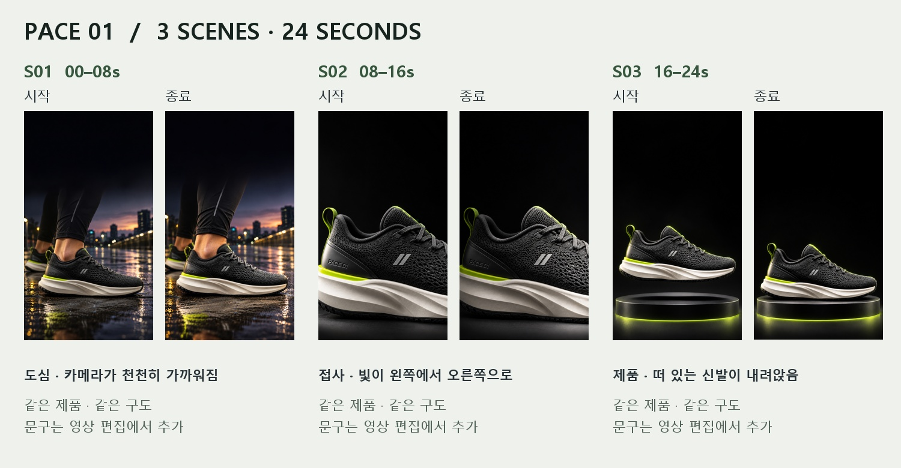

전체 생성 프롬프트 원문
ChatGPT Plus 이미지 6장 · Flow 영상 3개 · Vrew 목소리.각각 만든 결과를 이어 붙였습니다.
광고 MP4 다운로드

이미지 생성 프롬프트와 화면 보기 →
Flow 입력과 영상 3개 보기 →
Google Flow Pro에서 생성했습니다. 학생 무료 계정으로 같은 횟수 생성은 아직 검증하지 않았습니다.
대본·음성·편집표 보기 →
랜딩페이지 열기
수업 순서대로 시작 →